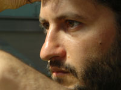

Directed by Huseyin Karabey; Turkey, 2008; 93 min.
Pittsburgh Premier
Event preceded by reception featuring food from Allegro Hearth Bakery.
Presented in conjunction with the Global Studies Department at the University of Pittsburgh
"I realized that the media never showed what was really going on in the country or the world...I wanted to change that, and make something that told the story of ordinary folks like us and not far-fetched characters living in a bubble." --Huseyin Karabey, Director
2010 Best Director, New York Tribeca International Film Festival
2010 Fipresci Award, Yerevan International Film Festival
2010 Best Actress (Ayca Damgaci), Sarajevo International Film Festival
2010 Best Actress (Ayca Damgaci), 15th Adana Golden Globe Film Festival
2010 Best Supporting Actor (Volga Sorgu), Antalya Golden Orange Film Festival, Turkey
2009 Euroassia International Film Festival, Borderlands International Film Festival, and the International Tokyo Film Festival
2009 4th Borderlands (Italy) International Film Festival: First Prize of Borderlands
Three years ago, in real-life, Hama Ali, a charismatic B movie actor from Iraq, and Ayca, a similarly rotund but charming actress from Turkey, develop a passionate relationship develop during film production. Their love affair continues across borders through video love letters and broken phone calls until the Americans invaded Iraq and hellish violence engulfed the country. Though most fled from East to West, seeking safety, Ayca decided to make the journey from West to East, seeking her lover. Gitmek, a dramatic feature film, is the true story of her extraordinary, and ultimately tragic, experiences in such mad times.

Huseyin Karabey
is regarded as one of Turkey’s new directing talents at a time when the independent film scene in Turkey is gaining recognition and Turkish films are receiving a wider distribution worldwide. Gitmek is his first feature film; it was selected for Rotterdam’s Cinemart 2006 and No Borders/IFP. Karabey entered the Cinema-TV department of the Fine Art Faculty of Marmara University and graduated in 2001.